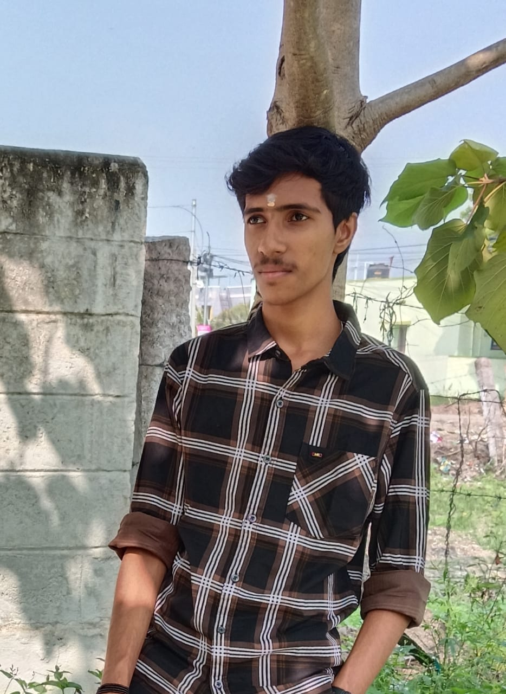
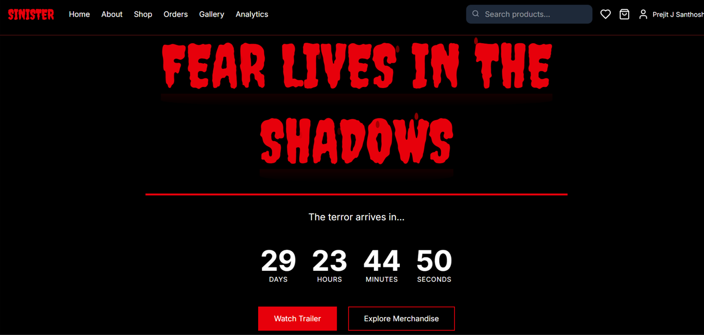

Pranav Dev G
M.Sc. Decision & Computing Sciences — Coimbatore Institute of Technology (2024–2029)
“Turning data into decisions. Building clarity from complexity.”
Coimbatore, Tamil Nadu, India
•
pranavdevg4@gmail.com
•
+91 9043885441
Professional Summary
M.Sc. candidate in Decision & Computing Sciences (CIT) with strong foundations in data structures, algorithms, statistical analysis, and Python development. Experienced in building full-stack prototypes, data-driven solutions, and machine learning proofs-of-concept. Focused on transforming complex data into actionable decisions.
Experience
2024 – Present
Hackathon Participant — CIT HackFest & College-Level Tech Events
Tamil Nadu, India
- Participated in coding and problem-solving hackathons focusing on Python, CSS, debugging, UI design, and real-time challenges.
- Built quick prototypes under time constraints and collaborated effectively with peers.
- Gained hands-on exposure to teamwork, idea pitching, and rapid development.
2024
Digital Marketing & Branding Designer — SINISTER Merchandise Website
Tamil Nadu, India
- Designed brand elements, ad creatives, and merchandise product displays.
- Created customer engagement strategies and promotional funnels for digital marketing.
Education
Relevant: Decision Analysis, Machine Learning, Data Mining, Algorithms, DBMS
2024 — 2029
M.Sc. Decision & Computing Sciences
Coimbatore Institute of Technology (CIT)
IInd year: Decision Analysis, Machine Learning, Data Mining, Algorithms, DBMS
Selected Projects

SINISTER Merchandise Website — Digital Marketing
Branding, ad creatives, funnels, social media marketing.

Aura Infinity — Music Player (Front-end Concept)
Minimal UI concept linking curated YouTube playlists.
NutriTrackPro — Nutrition Planner (Python CLI)
Weight tracking, meal logging, goal management using Python.
CV
Forgery Detection (Mini project)
Error Level Analysis + CNN/ViT ensemble for certificate forgery detection.
Skills
Python
HTML & CSS
JavaScript
Bootstrap
C & C++
Java
R
SQL queries
Tools & Platforms
Git · VS Code · Jupyter · Linux · SQL · Hackerrank
Languages
English — Professional
Tamil — Fluent
Malayalam — Native
Tamil — Fluent
Malayalam — Native
Interests
Data visualization · Video & Photo Editing · Product design · Music